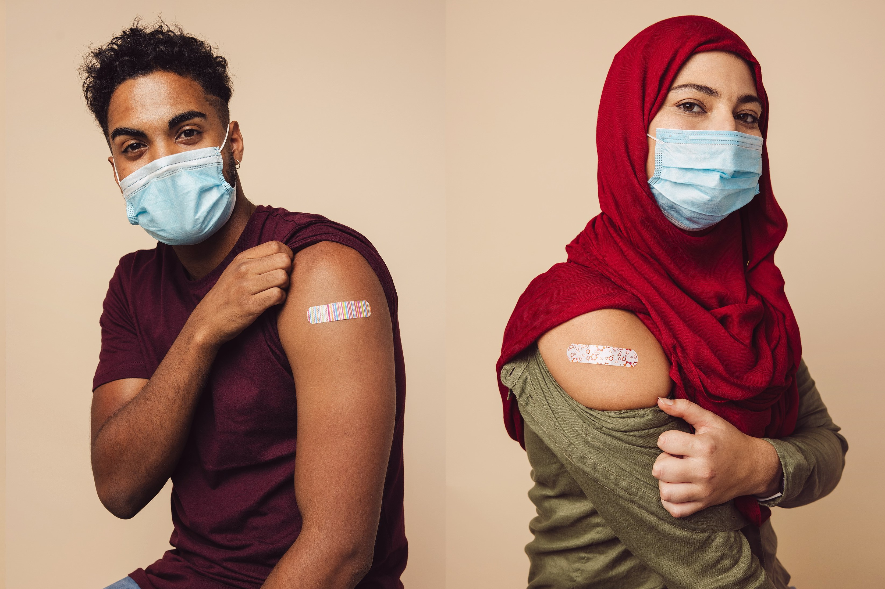
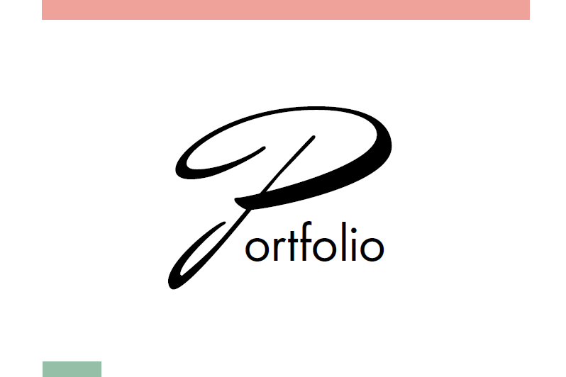

Mein Name ist Hanna Julia Rodler und ich studiere derzeit im 3. Semester Kommunikation, Wissen, Medien an
der FH Hagenberg. Mein Studium beinhaltet die Bereiche Web Development, UI/UX Design, E-Learning und
Management. Davon begeistert mich besonders das Web Development. Meine Kenntnisse erweitere ich in meinem
Studium und Vertiefungen im Web Development Bereich laufend.
Ein kleiner Einblick in meine Projekte

Österreich impft!
Responsive frontend Aufgabe "Website Österreich impft!" mit Bootstrap. Funktionalitäten derzeit: Löschen und Hinzufügen von Terminen,
Personen als geimpft markieren und Impfstatus wieder aufheben. Registrierung noch ohne UI über Konsole möglich.
Kinderarztwebsite
Website für die werdendende Kinderärztin Lisa Rodler. NOCH ohne Funktionalität. Template für die
laufende Umsetzung in Typo 3. Mit Bootstrap und SCSS.
Memory Game
Ein Memory Spiel, um die grauen Zellen etwas anzustrengen.
Bug List
Einfacher Bug Tracker, der Bugs eingeben lässt, offene ud geschlossene Bugs anzeigen sowie die
geschlossenen Bugs deleten kann.
Bug Manager List
Bug Tracker mit Abhängigkeiten von anderen Bugs. Die Bugs können gelöscht werden, geschlossen werden,
wenn die Unterbugs geschlossen wurden.
KWM Shopping List
Die Artikel werden einem "Einkaufswagen" hinzugefügt und können "gekauft" werden.
Task List
Aufgaben können erstellt, gelöscht und unabhängig von einander nach Datum, Priorität und Kategorie
gefiltert werden.
Kreative Arbeit

Portfolio
Im Rahmen der Fächer "Elementarformen" und "Gestaltungskonzepte" wurden uns eine Reihe von kreativen
Aufgaben gestellt, die ich in diesem Portfolio zusammengefasst sind.